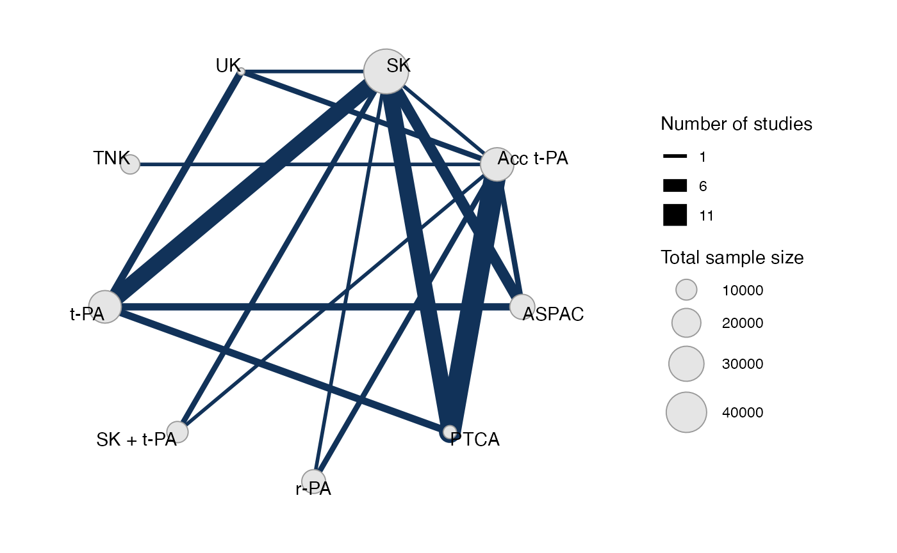
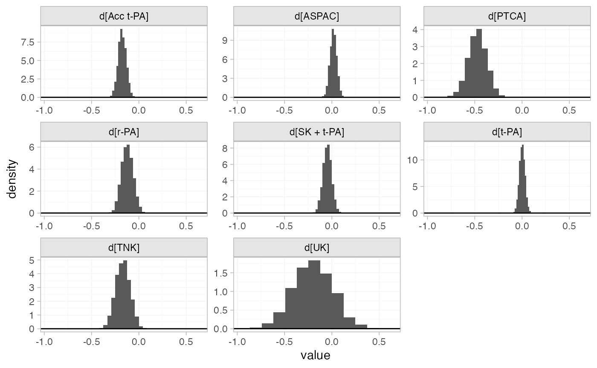
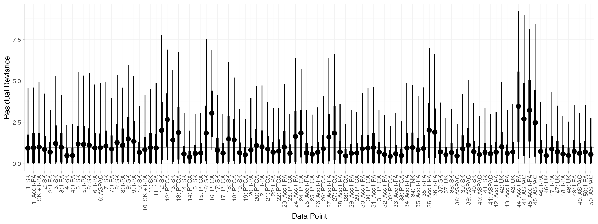
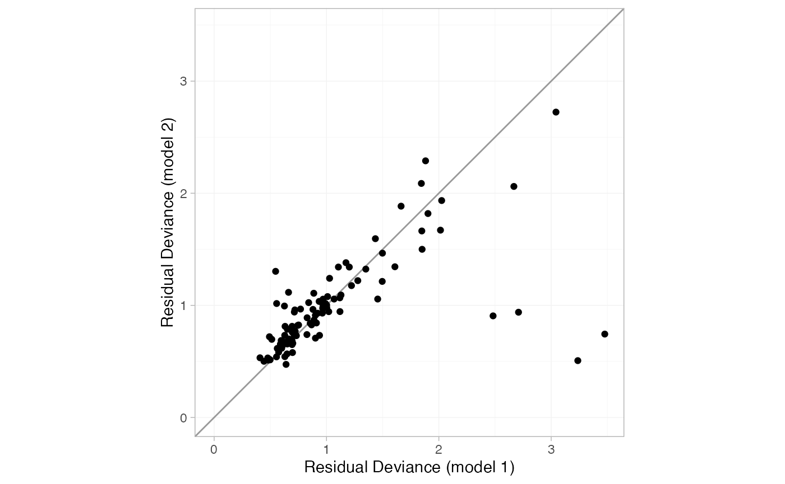
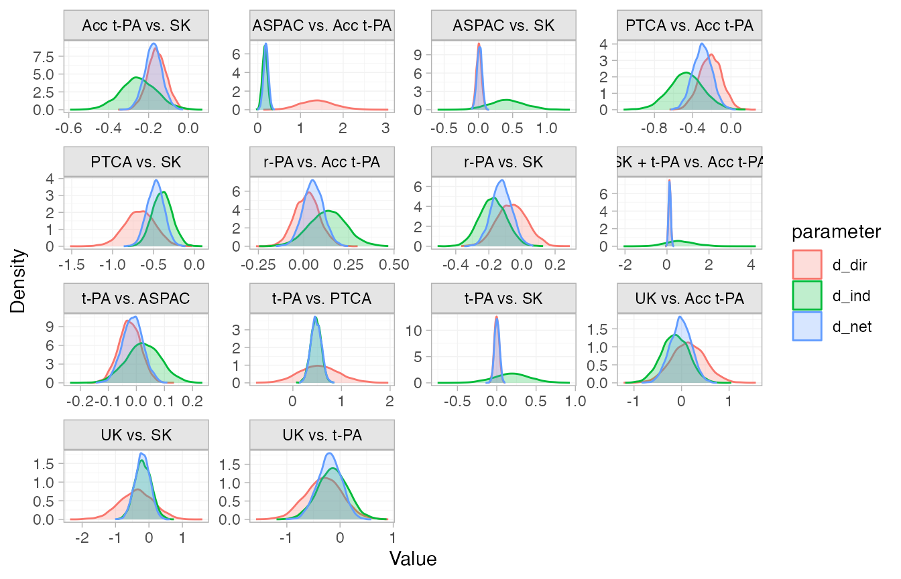
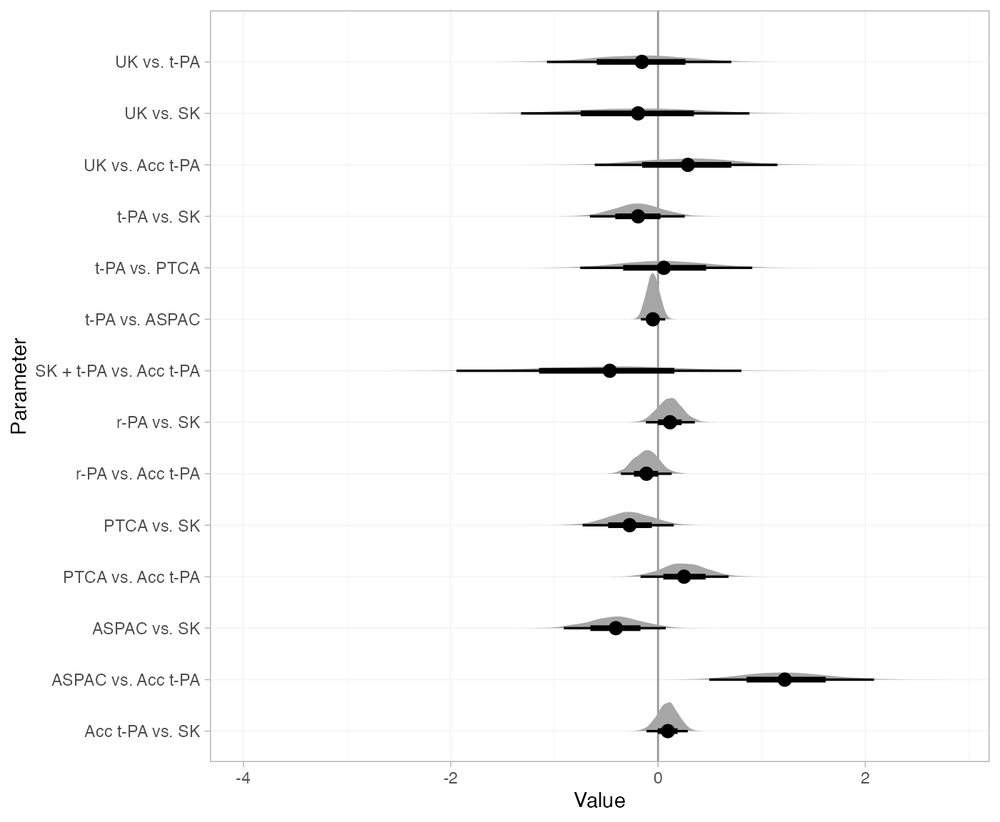
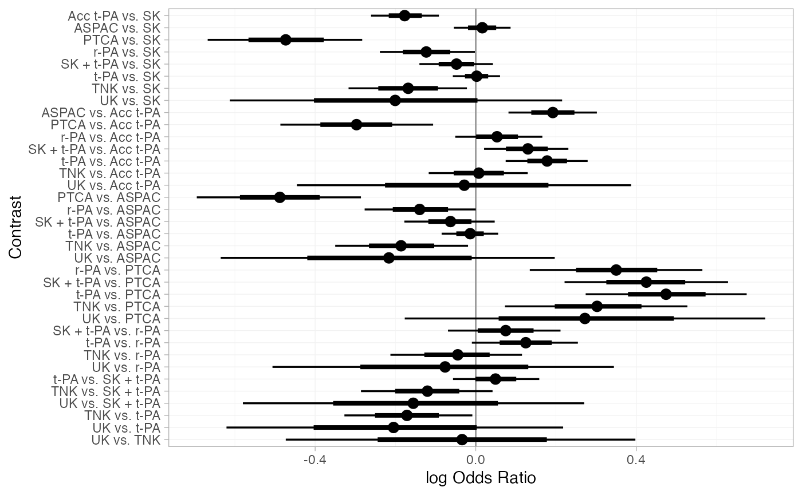
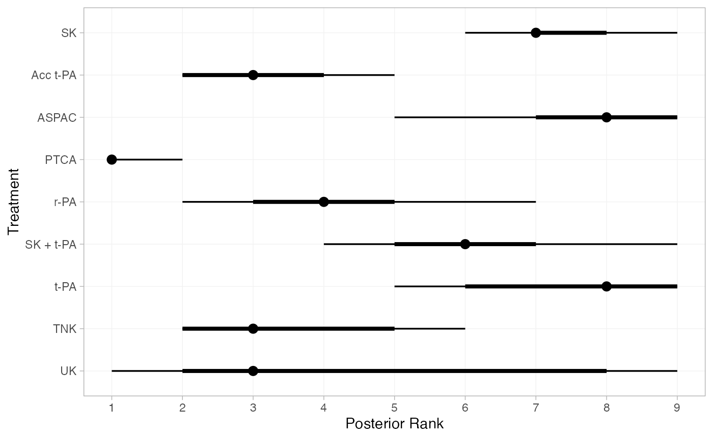
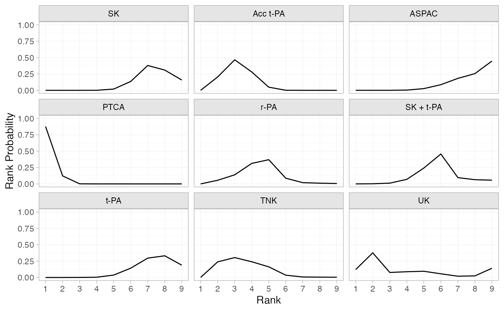
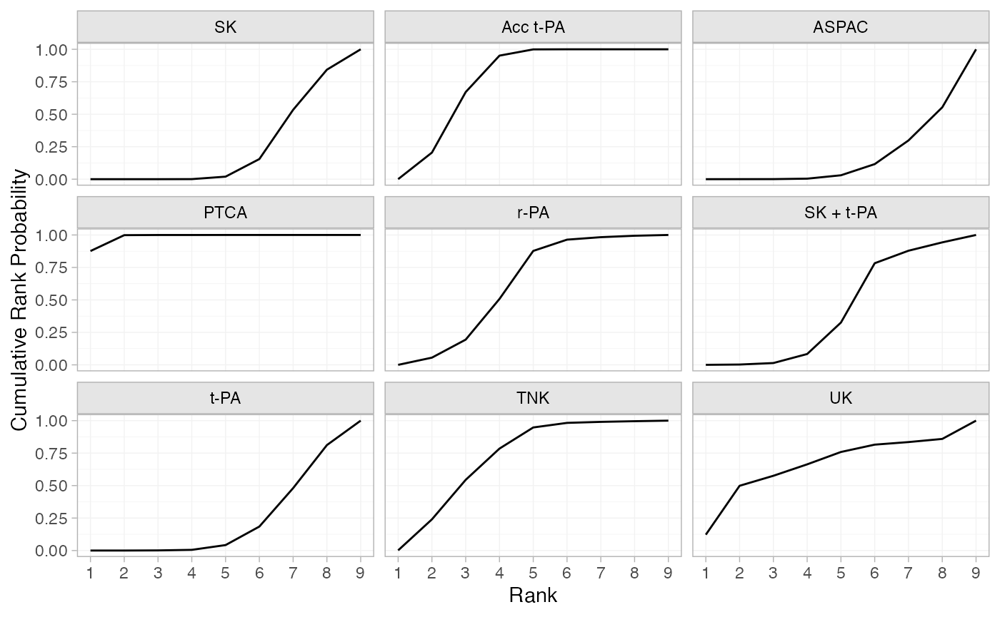

Example: Thrombolytic treatments
Source:vignettes/example_thrombolytics.Rmd
example_thrombolytics.Rmd
library(multinma)
options(mc.cores = parallel::detectCores())#> For execution on a local, multicore CPU with excess RAM we recommend calling
#> options(mc.cores = parallel::detectCores())
#>
#> Attaching package: 'multinma'
#> The following objects are masked from 'package:stats':
#>
#> dgamma, pgamma, qgammaThis vignette describes the analysis of 50 trials of 8 thrombolytic
drugs (streptokinase, SK; alteplase, t-PA; accelerated alteplase, Acc
t-PA; streptokinase plus alteplase, SK+tPA; reteplase, r-PA;
tenocteplase, TNK; urokinase, UK; anistreptilase, ASPAC) plus
per-cutaneous transluminal coronary angioplasty (PTCA) (Boland et al. 2003; Lu and Ades 2006; Dias et al.
2011, 2010). The number of deaths
in 30 or 35 days following acute myocardial infarction are recorded. The
data are available in this package as thrombolytics:
head(thrombolytics)
#> studyn trtn trtc r n
#> 1 1 1 SK 1472 20251
#> 2 1 3 Acc t-PA 652 10396
#> 3 1 4 SK + t-PA 723 10374
#> 4 2 1 SK 9 130
#> 5 2 2 t-PA 6 123
#> 6 3 1 SK 5 63Setting up the network
We begin by setting up the network. We have arm-level count data
giving the number of deaths (r) out of the total
(n) in each arm, so we use the function
set_agd_arm(). By default, SK is set as the network
reference treatment.
thrombo_net <- set_agd_arm(thrombolytics,
study = studyn,
trt = trtc,
r = r,
n = n)
thrombo_net
#> A network with 50 AgD studies (arm-based).
#>
#> ------------------------------------------------------- AgD studies (arm-based) ----
#> Study Treatment arms
#> 1 3: SK | Acc t-PA | SK + t-PA
#> 2 2: SK | t-PA
#> 3 2: SK | t-PA
#> 4 2: SK | t-PA
#> 5 2: SK | t-PA
#> 6 3: SK | ASPAC | t-PA
#> 7 2: SK | t-PA
#> 8 2: SK | t-PA
#> 9 2: SK | t-PA
#> 10 2: SK | SK + t-PA
#> ... plus 40 more studies
#>
#> Outcome type: count
#> ------------------------------------------------------------------------------------
#> Total number of treatments: 9
#> Total number of studies: 50
#> Reference treatment is: SK
#> Network is connectedPlot the network structure.
plot(thrombo_net, weight_edges = TRUE, weight_nodes = TRUE)
Fixed effects NMA
Following TSD 4 (Dias et
al. 2011), we fit a fixed effects NMA model, using the
nma() function with trt_effects = "fixed". We
use \mathrm{N}(0, 100^2) prior
distributions for the treatment effects d_k and study-specific intercepts \mu_j. We can examine the range of parameter
values implied by these prior distributions with the
summary() method:
summary(normal(scale = 100))
#> A Normal prior distribution: location = 0, scale = 100.
#> 50% of the prior density lies between -67.45 and 67.45.
#> 95% of the prior density lies between -196 and 196.The model is fitted using the nma() function. By
default, this will use a Binomial likelihood and a logit link function,
auto-detected from the data.
thrombo_fit <- nma(thrombo_net,
trt_effects = "fixed",
prior_intercept = normal(scale = 100),
prior_trt = normal(scale = 100))
#> Note: Setting "SK" as the network reference treatment.Basic parameter summaries are given by the print()
method:
thrombo_fit
#> A fixed effects NMA with a binomial likelihood (logit link).
#> Inference for Stan model: binomial_1par.
#> 4 chains, each with iter=2000; warmup=1000; thin=1;
#> post-warmup draws per chain=1000, total post-warmup draws=4000.
#>
#> mean se_mean sd 2.5% 25% 50% 75% 97.5% n_eff
#> d[Acc t-PA] -0.18 0.00 0.04 -0.26 -0.21 -0.18 -0.15 -0.09 2879
#> d[ASPAC] 0.02 0.00 0.04 -0.05 -0.01 0.02 0.04 0.09 5639
#> d[PTCA] -0.47 0.00 0.10 -0.67 -0.54 -0.47 -0.41 -0.28 3600
#> d[r-PA] -0.12 0.00 0.06 -0.24 -0.16 -0.12 -0.08 0.00 3876
#> d[SK + t-PA] -0.05 0.00 0.05 -0.14 -0.08 -0.05 -0.02 0.04 6030
#> d[t-PA] 0.00 0.00 0.03 -0.06 -0.02 0.00 0.02 0.06 4466
#> d[TNK] -0.17 0.00 0.08 -0.32 -0.22 -0.17 -0.12 -0.02 3892
#> d[UK] -0.20 0.00 0.21 -0.61 -0.34 -0.20 -0.06 0.22 4850
#> lp__ -43042.73 0.14 5.43 -43054.46 -43046.03 -43042.47 -43038.82 -43033.17 1581
#> Rhat
#> d[Acc t-PA] 1
#> d[ASPAC] 1
#> d[PTCA] 1
#> d[r-PA] 1
#> d[SK + t-PA] 1
#> d[t-PA] 1
#> d[TNK] 1
#> d[UK] 1
#> lp__ 1
#>
#> Samples were drawn using NUTS(diag_e) at Thu Oct 8 11:26:24 2026.
#> For each parameter, n_eff is a crude measure of effective sample size,
#> and Rhat is the potential scale reduction factor on split chains (at
#> convergence, Rhat=1).By default, summaries of the study-specific intercepts \mu_j are hidden, but could be examined by
changing the pars argument:
The prior and posterior distributions can be compared visually using
the plot_prior_posterior() function:
plot_prior_posterior(thrombo_fit, prior = "trt")
Model fit can be checked using the dic() function
(dic_consistency <- dic(thrombo_fit))
#> Residual deviance: 105.6 (on 102 data points)
#> pD: 58.5
#> DIC: 164.1and the residual deviance contributions examined with the
corresponding plot() method.
plot(dic_consistency)
There are a number of points which are not very well fit by the model, having posterior mean residual deviance contributions greater than 1.
Checking for inconsistency
Note: The results of the inconsistency models here are slightly different to those of Dias et al. (2010, 2011), although the overall conclusions are the same. This is due to the presence of multi-arm trials and a different ordering of treatments, meaning that inconsistency is parameterised differently within the multi-arm trials. The same results as Dias et al. are obtained if the network is instead set up with
trtnas the treatment variable.
Unrelated mean effects model
We first fit an unrelated mean effects (UME) model (Dias et al. 2011) to
assess the consistency assumption. Again, we use the function
nma(), but now with the argument
consistency = "ume".
thrombo_fit_ume <- nma(thrombo_net,
consistency = "ume",
trt_effects = "fixed",
prior_intercept = normal(scale = 100),
prior_trt = normal(scale = 100))
#> Note: Setting "SK" as the network reference treatment.
thrombo_fit_ume
#> A fixed effects NMA with a binomial likelihood (logit link).
#> An inconsistency model ('ume') was fitted.
#> Inference for Stan model: binomial_1par.
#> 4 chains, each with iter=2000; warmup=1000; thin=1;
#> post-warmup draws per chain=1000, total post-warmup draws=4000.
#>
#> mean se_mean sd 2.5% 25% 50% 75% 97.5%
#> d[Acc t-PA vs. SK] -0.16 0.00 0.05 -0.26 -0.19 -0.16 -0.12 -0.06
#> d[ASPAC vs. SK] 0.01 0.00 0.04 -0.07 -0.02 0.01 0.03 0.08
#> d[PTCA vs. SK] -0.67 0.00 0.19 -1.03 -0.79 -0.66 -0.54 -0.30
#> d[r-PA vs. SK] -0.06 0.00 0.09 -0.23 -0.12 -0.06 0.00 0.11
#> d[SK + t-PA vs. SK] -0.04 0.00 0.05 -0.14 -0.07 -0.04 -0.01 0.05
#> d[t-PA vs. SK] 0.00 0.00 0.03 -0.06 -0.02 0.00 0.02 0.06
#> d[UK vs. SK] -0.38 0.01 0.51 -1.39 -0.73 -0.38 -0.03 0.59
#> d[ASPAC vs. Acc t-PA] 1.40 0.01 0.41 0.63 1.12 1.39 1.67 2.25
#> d[PTCA vs. Acc t-PA] -0.21 0.00 0.12 -0.45 -0.30 -0.22 -0.13 0.02
#> d[r-PA vs. Acc t-PA] 0.02 0.00 0.07 -0.11 -0.03 0.02 0.06 0.14
#> d[TNK vs. Acc t-PA] 0.01 0.00 0.06 -0.12 -0.04 0.01 0.05 0.14
#> d[UK vs. Acc t-PA] 0.14 0.01 0.36 -0.56 -0.10 0.14 0.39 0.86
#> d[t-PA vs. ASPAC] 0.29 0.01 0.35 -0.39 0.05 0.29 0.52 0.98
#> d[t-PA vs. PTCA] 0.55 0.01 0.42 -0.26 0.27 0.54 0.83 1.39
#> d[UK vs. t-PA] -0.30 0.00 0.35 -1.00 -0.53 -0.29 -0.06 0.36
#> lp__ -43039.75 0.16 5.91 -43052.64 -43043.41 -43039.40 -43035.70 -43029.22
#> n_eff Rhat
#> d[Acc t-PA vs. SK] 6628 1
#> d[ASPAC vs. SK] 5203 1
#> d[PTCA vs. SK] 5441 1
#> d[r-PA vs. SK] 5455 1
#> d[SK + t-PA vs. SK] 6766 1
#> d[t-PA vs. SK] 4250 1
#> d[UK vs. SK] 5953 1
#> d[ASPAC vs. Acc t-PA] 3542 1
#> d[PTCA vs. Acc t-PA] 4269 1
#> d[r-PA vs. Acc t-PA] 5154 1
#> d[TNK vs. Acc t-PA] 5579 1
#> d[UK vs. Acc t-PA] 4017 1
#> d[t-PA vs. ASPAC] 4378 1
#> d[t-PA vs. PTCA] 4054 1
#> d[UK vs. t-PA] 5410 1
#> lp__ 1365 1
#>
#> Samples were drawn using NUTS(diag_e) at Thu Oct 8 11:26:30 2026.
#> For each parameter, n_eff is a crude measure of effective sample size,
#> and Rhat is the potential scale reduction factor on split chains (at
#> convergence, Rhat=1).Comparing the model fit statistics
dic_consistency
#> Residual deviance: 105.6 (on 102 data points)
#> pD: 58.5
#> DIC: 164.1
(dic_ume <- dic(thrombo_fit_ume))
#> Residual deviance: 99.7 (on 102 data points)
#> pD: 65.9
#> DIC: 165.6Whilst the UME model fits the data better, having a lower residual
deviance, the additional parameters in the UME model mean that the DIC
is very similar between both models. However, it is also important to
examine the individual contributions to model fit of each data point
under the two models (a so-called “dev-dev” plot). Passing two
nma_dic objects produced by the dic() function
to the plot() method produces this dev-dev plot:
plot(dic_consistency, dic_ume, show_uncertainty = FALSE)
The four points lying in the lower right corner of the plot have much lower posterior mean residual deviance under the UME model, indicating that these data are potentially inconsistent. These points correspond to trials 44 and 45, the only two trials comparing Acc t-PA to ASPAC. The ASPAC vs. Acc t-PA estimates are very different under the consistency model and inconsistency (UME) model, suggesting that these two trials may be systematically different from the others in the network.
Node-splitting
Another method for assessing inconsistency is node-splitting (Dias et al. 2011, 2010). Whereas the UME model assesses inconsistency globally, node-splitting assesses inconsistency locally for each potentially inconsistent comparison (those with both direct and indirect evidence) in turn.
Node-splitting can be performed using the nma() function
with the argument consistency = "nodesplit". By default,
all possible comparisons will be split (as determined by the
get_nodesplits() function). Alternatively, a specific
comparison or comparisons to split can be provided to the
nodesplit argument.
thrombo_nodesplit <- nma(thrombo_net,
consistency = "nodesplit",
trt_effects = "fixed",
prior_intercept = normal(scale = 100),
prior_trt = normal(scale = 100))
#> Fitting model 1 of 15, node-split: Acc t-PA vs. SK
#> Note: Setting "SK" as the network reference treatment.
#> Fitting model 2 of 15, node-split: ASPAC vs. SK
#> Note: Setting "SK" as the network reference treatment.
#> Fitting model 3 of 15, node-split: PTCA vs. SK
#> Note: Setting "SK" as the network reference treatment.
#> Fitting model 4 of 15, node-split: r-PA vs. SK
#> Note: Setting "SK" as the network reference treatment.
#> Fitting model 5 of 15, node-split: t-PA vs. SK
#> Note: Setting "SK" as the network reference treatment.
#> Fitting model 6 of 15, node-split: UK vs. SK
#> Note: Setting "SK" as the network reference treatment.
#> Fitting model 7 of 15, node-split: ASPAC vs. Acc t-PA
#> Note: Setting "SK" as the network reference treatment.
#> Fitting model 8 of 15, node-split: PTCA vs. Acc t-PA
#> Note: Setting "SK" as the network reference treatment.
#> Fitting model 9 of 15, node-split: r-PA vs. Acc t-PA
#> Note: Setting "SK" as the network reference treatment.
#> Fitting model 10 of 15, node-split: SK + t-PA vs. Acc t-PA
#> Note: Setting "SK" as the network reference treatment.
#> Fitting model 11 of 15, node-split: UK vs. Acc t-PA
#> Note: Setting "SK" as the network reference treatment.
#> Fitting model 12 of 15, node-split: t-PA vs. ASPAC
#> Note: Setting "SK" as the network reference treatment.
#> Fitting model 13 of 15, node-split: t-PA vs. PTCA
#> Note: Setting "SK" as the network reference treatment.
#> Fitting model 14 of 15, node-split: UK vs. t-PA
#> Note: Setting "SK" as the network reference treatment.
#> Fitting model 15 of 15, consistency model
#> Note: Setting "SK" as the network reference treatment.The summary() method summarises the node-splitting
results, displaying the direct and indirect estimates d_\mathrm{dir} and d_\mathrm{ind} from each node-split model,
the network estimate d_\mathrm{net}
from the consistency model, the inconsistency factor \omega = d_\mathrm{dir} - d_\mathrm{ind}, and
a Bayesian p-value for inconsistency on
each comparison. The DIC model fit statistics are also provided. (If a
random effects model was fitted, the heterogeneity standard deviation
\tau under each node-split model and
under the consistency model would also be displayed.)
summary(thrombo_nodesplit)
#> Node-splitting models fitted for 14 comparisons.
#>
#> ---------------------------------------------------- Node-split Acc t-PA vs. SK ----
#>
#> mean sd 2.5% 25% 50% 75% 97.5% Bulk_ESS Tail_ESS Rhat
#> d_net -0.18 0.04 -0.26 -0.20 -0.18 -0.15 -0.09 2700 2968 1.00
#> d_dir -0.16 0.05 -0.25 -0.19 -0.16 -0.13 -0.06 4335 3575 1.00
#> d_ind -0.25 0.09 -0.43 -0.31 -0.25 -0.19 -0.07 884 1638 1.01
#> omega 0.09 0.10 -0.11 0.03 0.09 0.16 0.29 1019 1711 1.01
#>
#> Residual deviance: 105.9 (on 102 data points)
#> pD: 59.4
#> DIC: 165.4
#>
#> Bayesian p-value: 0.35
#>
#> ------------------------------------------------------- Node-split ASPAC vs. SK ----
#>
#> mean sd 2.5% 25% 50% 75% 97.5% Bulk_ESS Tail_ESS Rhat
#> d_net 0.02 0.04 -0.06 -0.01 0.02 0.04 0.09 5417 3762 1
#> d_dir 0.01 0.04 -0.07 -0.02 0.01 0.03 0.08 4943 3508 1
#> d_ind 0.42 0.25 -0.07 0.25 0.42 0.59 0.92 2361 2902 1
#> omega -0.41 0.26 -0.91 -0.58 -0.41 -0.24 0.07 2398 2895 1
#>
#> Residual deviance: 104.3 (on 102 data points)
#> pD: 59.7
#> DIC: 163.9
#>
#> Bayesian p-value: 0.11
#>
#> -------------------------------------------------------- Node-split PTCA vs. SK ----
#>
#> mean sd 2.5% 25% 50% 75% 97.5% Bulk_ESS Tail_ESS Rhat
#> d_net -0.47 0.10 -0.67 -0.54 -0.47 -0.41 -0.28 4270 3371 1
#> d_dir -0.67 0.18 -1.04 -0.79 -0.67 -0.54 -0.32 5548 3369 1
#> d_ind -0.39 0.12 -0.63 -0.48 -0.39 -0.31 -0.15 2861 3068 1
#> omega -0.27 0.22 -0.73 -0.42 -0.27 -0.12 0.15 3673 3082 1
#>
#> Residual deviance: 105.2 (on 102 data points)
#> pD: 59.5
#> DIC: 164.7
#>
#> Bayesian p-value: 0.22
#>
#> -------------------------------------------------------- Node-split r-PA vs. SK ----
#>
#> mean sd 2.5% 25% 50% 75% 97.5% Bulk_ESS Tail_ESS Rhat
#> d_net -0.12 0.06 -0.24 -0.16 -0.12 -0.08 0.00 3745 3516 1
#> d_dir -0.06 0.09 -0.23 -0.12 -0.06 0.00 0.12 4638 3337 1
#> d_ind -0.18 0.08 -0.33 -0.23 -0.18 -0.12 -0.02 2295 2802 1
#> omega 0.11 0.12 -0.12 0.03 0.12 0.19 0.36 2634 3030 1
#>
#> Residual deviance: 105.9 (on 102 data points)
#> pD: 59.7
#> DIC: 165.6
#>
#> Bayesian p-value: 0.34
#>
#> -------------------------------------------------------- Node-split t-PA vs. SK ----
#>
#> mean sd 2.5% 25% 50% 75% 97.5% Bulk_ESS Tail_ESS Rhat
#> d_net 0.00 0.03 -0.06 -0.02 0.00 0.02 0.06 4991 3570 1.00
#> d_dir 0.00 0.03 -0.06 -0.02 0.00 0.02 0.06 4175 3376 1.00
#> d_ind 0.19 0.23 -0.26 0.04 0.19 0.34 0.64 1264 2080 1.01
#> omega -0.19 0.23 -0.66 -0.35 -0.19 -0.04 0.26 1266 2297 1.01
#>
#> Residual deviance: 105.8 (on 102 data points)
#> pD: 59.3
#> DIC: 165.1
#>
#> Bayesian p-value: 0.4
#>
#> ---------------------------------------------------------- Node-split UK vs. SK ----
#>
#> mean sd 2.5% 25% 50% 75% 97.5% Bulk_ESS Tail_ESS Rhat
#> d_net -0.20 0.22 -0.63 -0.34 -0.19 -0.04 0.22 4323 3645 1
#> d_dir -0.37 0.51 -1.38 -0.72 -0.36 -0.02 0.61 5210 3420 1
#> d_ind -0.17 0.25 -0.65 -0.34 -0.18 0.00 0.31 4198 3258 1
#> omega -0.20 0.56 -1.32 -0.59 -0.19 0.20 0.88 4635 3134 1
#>
#> Residual deviance: 107.3 (on 102 data points)
#> pD: 60.2
#> DIC: 167.6
#>
#> Bayesian p-value: 0.74
#>
#> ------------------------------------------------- Node-split ASPAC vs. Acc t-PA ----
#>
#> mean sd 2.5% 25% 50% 75% 97.5% Bulk_ESS Tail_ESS Rhat
#> d_net 0.19 0.06 0.08 0.16 0.19 0.23 0.30 3587 3032 1
#> d_dir 1.40 0.40 0.66 1.12 1.39 1.66 2.25 3371 2649 1
#> d_ind 0.16 0.06 0.05 0.13 0.16 0.20 0.28 2933 3417 1
#> omega 1.24 0.41 0.49 0.96 1.22 1.50 2.08 3267 2515 1
#>
#> Residual deviance: 96.2 (on 102 data points)
#> pD: 59.1
#> DIC: 155.3
#>
#> Bayesian p-value: <0.01
#>
#> -------------------------------------------------- Node-split PTCA vs. Acc t-PA ----
#>
#> mean sd 2.5% 25% 50% 75% 97.5% Bulk_ESS Tail_ESS Rhat
#> d_net -0.30 0.10 -0.50 -0.37 -0.30 -0.23 -0.10 5797 3287 1
#> d_dir -0.21 0.12 -0.45 -0.29 -0.21 -0.13 0.01 4673 3164 1
#> d_ind -0.47 0.18 -0.82 -0.58 -0.47 -0.35 -0.11 3255 3299 1
#> omega 0.25 0.22 -0.17 0.11 0.25 0.40 0.68 3156 3264 1
#>
#> Residual deviance: 105.2 (on 102 data points)
#> pD: 59.5
#> DIC: 164.7
#>
#> Bayesian p-value: 0.23
#>
#> -------------------------------------------------- Node-split r-PA vs. Acc t-PA ----
#>
#> mean sd 2.5% 25% 50% 75% 97.5% Bulk_ESS Tail_ESS Rhat
#> d_net 0.05 0.06 -0.06 0.02 0.05 0.09 0.16 4956 2849 1
#> d_dir 0.02 0.07 -0.11 -0.03 0.02 0.07 0.16 4577 3717 1
#> d_ind 0.13 0.10 -0.07 0.07 0.13 0.20 0.33 1537 2568 1
#> omega -0.11 0.12 -0.36 -0.20 -0.11 -0.03 0.13 1572 2302 1
#>
#> Residual deviance: 106.3 (on 102 data points)
#> pD: 60.1
#> DIC: 166.4
#>
#> Bayesian p-value: 0.34
#>
#> --------------------------------------------- Node-split SK + t-PA vs. Acc t-PA ----
#>
#> mean sd 2.5% 25% 50% 75% 97.5% Bulk_ESS Tail_ESS Rhat
#> d_net 0.13 0.05 0.03 0.09 0.13 0.17 0.24 5135 3247 1
#> d_dir 0.13 0.05 0.02 0.09 0.13 0.16 0.23 3633 3409 1
#> d_ind 0.63 0.71 -0.69 0.16 0.59 1.07 2.07 2687 2168 1
#> omega -0.50 0.70 -1.94 -0.95 -0.47 -0.04 0.80 2666 2373 1
#>
#> Residual deviance: 106.5 (on 102 data points)
#> pD: 59.7
#> DIC: 166.2
#>
#> Bayesian p-value: 0.46
#>
#> ---------------------------------------------------- Node-split UK vs. Acc t-PA ----
#>
#> mean sd 2.5% 25% 50% 75% 97.5% Bulk_ESS Tail_ESS Rhat
#> d_net -0.02 0.22 -0.46 -0.17 -0.02 0.13 0.41 4379 3435 1
#> d_dir 0.14 0.35 -0.54 -0.10 0.14 0.38 0.84 4613 3242 1
#> d_ind -0.14 0.29 -0.70 -0.33 -0.13 0.07 0.42 4098 3387 1
#> omega 0.28 0.45 -0.61 -0.03 0.29 0.59 1.15 3831 2944 1
#>
#> Residual deviance: 106.8 (on 102 data points)
#> pD: 60
#> DIC: 166.8
#>
#> Bayesian p-value: 0.54
#>
#> ----------------------------------------------------- Node-split t-PA vs. ASPAC ----
#>
#> mean sd 2.5% 25% 50% 75% 97.5% Bulk_ESS Tail_ESS Rhat
#> d_net -0.01 0.04 -0.08 -0.04 -0.01 0.01 0.06 7284 3219 1
#> d_dir -0.02 0.04 -0.10 -0.05 -0.02 0.00 0.05 4805 3667 1
#> d_ind 0.03 0.06 -0.09 -0.02 0.03 0.07 0.15 3896 3396 1
#> omega -0.05 0.06 -0.17 -0.09 -0.05 -0.01 0.07 4079 3115 1
#>
#> Residual deviance: 106.4 (on 102 data points)
#> pD: 59.8
#> DIC: 166.2
#>
#> Bayesian p-value: 0.43
#>
#> ------------------------------------------------------ Node-split t-PA vs. PTCA ----
#>
#> mean sd 2.5% 25% 50% 75% 97.5% Bulk_ESS Tail_ESS Rhat
#> d_net 0.48 0.11 0.27 0.40 0.47 0.55 0.68 4603 3595 1
#> d_dir 0.54 0.41 -0.25 0.26 0.53 0.81 1.36 4808 3384 1
#> d_ind 0.47 0.11 0.26 0.40 0.47 0.55 0.68 3837 3310 1
#> omega 0.07 0.42 -0.75 -0.22 0.06 0.35 0.91 4480 3176 1
#>
#> Residual deviance: 106.7 (on 102 data points)
#> pD: 59.5
#> DIC: 166.2
#>
#> Bayesian p-value: 0.89
#>
#> -------------------------------------------------------- Node-split UK vs. t-PA ----
#>
#> mean sd 2.5% 25% 50% 75% 97.5% Bulk_ESS Tail_ESS Rhat
#> d_net -0.20 0.22 -0.64 -0.34 -0.19 -0.05 0.22 4354 3429 1
#> d_dir -0.31 0.35 -0.98 -0.54 -0.30 -0.07 0.37 5130 3359 1
#> d_ind -0.14 0.29 -0.71 -0.33 -0.14 0.06 0.42 3684 3269 1
#> omega -0.17 0.44 -1.07 -0.47 -0.16 0.13 0.71 3580 3417 1
#>
#> Residual deviance: 107.3 (on 102 data points)
#> pD: 60.3
#> DIC: 167.6
#>
#> Bayesian p-value: 0.71Node-splitting the ASPAC vs. Acc t-PA comparison results the lowest DIC, and this is lower than the consistency model. The posterior distribution for the inconsistency factor \omega for this comparison lies far from 0 and the Bayesian p-value for inconsistency is small (< 0.01), meaning that there is substantial disagreement between the direct and indirect evidence on this comparison.
We can visually compare the direct, indirect, and network estimates
using the plot() method.
plot(thrombo_nodesplit)
We can also plot the posterior distributions of the inconsistency
factors \omega, again using the
plot() method. Here, we specify a “halfeye” plot of the
posterior density with median and credible intervals, and customise the
plot layout with standard ggplot2 functions.
plot(thrombo_nodesplit, pars = "omega", stat = "halfeye", ref_line = 0) +
ggplot2::aes(y = comparison) +
ggplot2::facet_null()
Notice again that the posterior distribution of the inconsistency factor for the ASPAC vs. Acc t-PA comparison lies far from 0, indicating substantial inconsistency between the direct and indirect evidence on this comparison.
Further results
Relative effects for all pairwise contrasts between treatments can be
produced using the relative_effects() function, with
all_contrasts = TRUE.
(thrombo_releff <- relative_effects(thrombo_fit, all_contrasts = TRUE))
#> mean sd 2.5% 25% 50% 75% 97.5% Bulk_ESS Tail_ESS Rhat
#> d[Acc t-PA vs. SK] -0.18 0.04 -0.26 -0.21 -0.18 -0.15 -0.09 2906 3333 1
#> d[ASPAC vs. SK] 0.02 0.04 -0.05 -0.01 0.02 0.04 0.09 5734 3338 1
#> d[PTCA vs. SK] -0.47 0.10 -0.67 -0.54 -0.47 -0.41 -0.28 3632 3500 1
#> d[r-PA vs. SK] -0.12 0.06 -0.24 -0.16 -0.12 -0.08 0.00 3885 3190 1
#> d[SK + t-PA vs. SK] -0.05 0.05 -0.14 -0.08 -0.05 -0.02 0.04 6092 3339 1
#> d[t-PA vs. SK] 0.00 0.03 -0.06 -0.02 0.00 0.02 0.06 4504 3387 1
#> d[TNK vs. SK] -0.17 0.08 -0.32 -0.22 -0.17 -0.12 -0.02 3888 3173 1
#> d[UK vs. SK] -0.20 0.21 -0.61 -0.34 -0.20 -0.06 0.22 4903 3381 1
#> d[ASPAC vs. Acc t-PA] 0.19 0.06 0.08 0.15 0.19 0.23 0.30 3886 3625 1
#> d[PTCA vs. Acc t-PA] -0.30 0.09 -0.49 -0.36 -0.30 -0.23 -0.11 4740 3458 1
#> d[r-PA vs. Acc t-PA] 0.05 0.06 -0.05 0.02 0.05 0.09 0.17 5788 3723 1
#> d[SK + t-PA vs. Acc t-PA] 0.13 0.05 0.02 0.09 0.13 0.17 0.23 6124 3469 1
#> d[t-PA vs. Acc t-PA] 0.18 0.05 0.07 0.14 0.18 0.21 0.28 3409 3078 1
#> d[TNK vs. Acc t-PA] 0.01 0.06 -0.12 -0.04 0.01 0.05 0.13 6371 3781 1
#> d[UK vs. Acc t-PA] -0.03 0.21 -0.45 -0.17 -0.03 0.12 0.39 4798 3363 1
#> d[PTCA vs. ASPAC] -0.49 0.11 -0.69 -0.56 -0.49 -0.42 -0.29 3780 3209 1
#> d[r-PA vs. ASPAC] -0.14 0.07 -0.28 -0.19 -0.14 -0.09 0.00 4443 3027 1
#> d[SK + t-PA vs. ASPAC] -0.06 0.06 -0.18 -0.10 -0.06 -0.03 0.05 5658 3486 1
#> d[t-PA vs. ASPAC] -0.01 0.04 -0.08 -0.04 -0.01 0.01 0.06 6687 2893 1
#> d[TNK vs. ASPAC] -0.18 0.09 -0.35 -0.24 -0.19 -0.13 -0.02 4266 3506 1
#> d[UK vs. ASPAC] -0.22 0.21 -0.64 -0.36 -0.22 -0.07 0.20 5079 3267 1
#> d[r-PA vs. PTCA] 0.35 0.11 0.13 0.28 0.35 0.42 0.56 4853 3294 1
#> d[SK + t-PA vs. PTCA] 0.42 0.10 0.22 0.35 0.43 0.50 0.63 4469 3755 1
#> d[t-PA vs. PTCA] 0.47 0.10 0.27 0.41 0.47 0.54 0.67 3607 3307 1
#> d[TNK vs. PTCA] 0.30 0.11 0.07 0.23 0.30 0.38 0.53 5818 3378 1
#> d[UK vs. PTCA] 0.27 0.23 -0.18 0.11 0.27 0.43 0.72 4510 3447 1
#> d[SK + t-PA vs. r-PA] 0.07 0.07 -0.07 0.03 0.07 0.12 0.21 6196 3476 1
#> d[t-PA vs. r-PA] 0.12 0.07 -0.01 0.08 0.12 0.17 0.25 4029 3378 1
#> d[TNK vs. r-PA] -0.05 0.08 -0.21 -0.10 -0.04 0.01 0.12 7434 3250 1
#> d[UK vs. r-PA] -0.08 0.22 -0.51 -0.22 -0.08 0.07 0.34 4895 3739 1
#> d[t-PA vs. SK + t-PA] 0.05 0.05 -0.06 0.01 0.05 0.09 0.16 5883 3320 1
#> d[TNK vs. SK + t-PA] -0.12 0.08 -0.29 -0.18 -0.12 -0.06 0.04 6105 3391 1
#> d[UK vs. SK + t-PA] -0.15 0.22 -0.58 -0.30 -0.16 -0.01 0.27 4949 3434 1
#> d[TNK vs. t-PA] -0.17 0.08 -0.33 -0.23 -0.17 -0.11 -0.01 4033 3003 1
#> d[UK vs. t-PA] -0.20 0.21 -0.62 -0.35 -0.20 -0.06 0.22 4991 3361 1
#> d[UK vs. TNK] -0.03 0.22 -0.47 -0.18 -0.03 0.12 0.40 4871 2502 1
plot(thrombo_releff, ref_line = 0)
Treatment rankings, rank probabilities, and cumulative rank probabilities.
(thrombo_ranks <- posterior_ranks(thrombo_fit))
#> mean sd 2.5% 25% 50% 75% 97.5% Bulk_ESS Tail_ESS Rhat
#> rank[SK] 7.45 0.98 6 7 7 8 9 4011 NA 1
#> rank[Acc t-PA] 3.17 0.81 2 3 3 4 5 4292 3778 1
#> rank[ASPAC] 8.00 1.13 5 7 8 9 9 4322 NA 1
#> rank[PTCA] 1.13 0.34 1 1 1 1 2 3321 3252 1
#> rank[r-PA] 4.42 1.18 2 4 4 5 7 5341 3623 1
#> rank[SK + t-PA] 5.97 1.24 4 5 6 6 9 5132 NA 1
#> rank[t-PA] 7.47 1.10 5 7 8 8 9 4863 NA 1
#> rank[TNK] 3.51 1.26 2 3 3 4 6 5365 3706 1
#> rank[UK] 3.87 2.66 1 2 3 5 9 4557 NA 1
plot(thrombo_ranks)
(thrombo_rankprobs <- posterior_rank_probs(thrombo_fit))
#> p_rank[1] p_rank[2] p_rank[3] p_rank[4] p_rank[5] p_rank[6] p_rank[7] p_rank[8]
#> d[SK] 0.00 0.00 0.00 0.00 0.02 0.14 0.38 0.31
#> d[Acc t-PA] 0.00 0.20 0.47 0.28 0.05 0.00 0.00 0.00
#> d[ASPAC] 0.00 0.00 0.00 0.00 0.03 0.09 0.18 0.26
#> d[PTCA] 0.88 0.12 0.00 0.00 0.00 0.00 0.00 0.00
#> d[r-PA] 0.00 0.06 0.14 0.31 0.37 0.09 0.02 0.01
#> d[SK + t-PA] 0.00 0.00 0.01 0.07 0.24 0.46 0.10 0.06
#> d[t-PA] 0.00 0.00 0.00 0.00 0.04 0.14 0.30 0.33
#> d[TNK] 0.00 0.24 0.30 0.24 0.16 0.04 0.01 0.01
#> d[UK] 0.12 0.38 0.08 0.09 0.10 0.06 0.02 0.02
#> p_rank[9]
#> d[SK] 0.16
#> d[Acc t-PA] 0.00
#> d[ASPAC] 0.45
#> d[PTCA] 0.00
#> d[r-PA] 0.01
#> d[SK + t-PA] 0.06
#> d[t-PA] 0.19
#> d[TNK] 0.00
#> d[UK] 0.14
plot(thrombo_rankprobs)
(thrombo_cumrankprobs <- posterior_rank_probs(thrombo_fit, cumulative = TRUE))
#> p_rank[1] p_rank[2] p_rank[3] p_rank[4] p_rank[5] p_rank[6] p_rank[7] p_rank[8]
#> d[SK] 0.00 0.00 0.00 0.00 0.02 0.16 0.53 0.84
#> d[Acc t-PA] 0.00 0.20 0.67 0.95 1.00 1.00 1.00 1.00
#> d[ASPAC] 0.00 0.00 0.00 0.00 0.03 0.12 0.30 0.55
#> d[PTCA] 0.88 1.00 1.00 1.00 1.00 1.00 1.00 1.00
#> d[r-PA] 0.00 0.06 0.19 0.51 0.88 0.96 0.98 0.99
#> d[SK + t-PA] 0.00 0.00 0.01 0.08 0.33 0.78 0.88 0.94
#> d[t-PA] 0.00 0.00 0.00 0.01 0.04 0.18 0.48 0.81
#> d[TNK] 0.00 0.24 0.54 0.78 0.95 0.98 0.99 1.00
#> d[UK] 0.12 0.50 0.58 0.66 0.76 0.82 0.84 0.86
#> p_rank[9]
#> d[SK] 1
#> d[Acc t-PA] 1
#> d[ASPAC] 1
#> d[PTCA] 1
#> d[r-PA] 1
#> d[SK + t-PA] 1
#> d[t-PA] 1
#> d[TNK] 1
#> d[UK] 1
plot(thrombo_cumrankprobs)